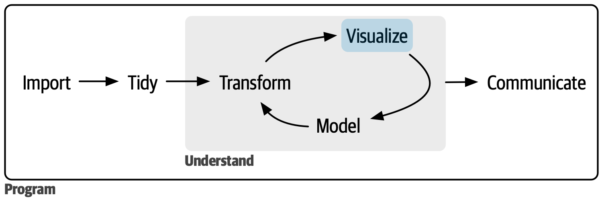

可视化
在阅读了本书的第一部分之后，你（至少从表面上）理解了做数据科学最重要的工具，现在是时候深入细节了。在 本书这一部分，你将进一步深入学习数据可视化。
每一章都会介绍创建数据可视化的一个或多个方面。
- 在 9 图层 部分，学习图形的分层语法；
- 在 10 探索性数据分析 部分，把可视化与你的好奇心和怀疑精神结合起来，针对数据提出并回答有趣的问题；
- 最后, 在 11 交流 部分，学习如何将探索性图形提升为解释性图形，这些图形有助于新手尽快理解你的分析结果。
这三章带你进入可视化的世界，但还有更多要学习的内容。学 习更多知识的绝佳选择是ggplot2：ggplot2: Elegant graphics for data analysis.。这 本书深入探讨了底层理论，并提供了许多如何将各个部分组合起来解决实际问题的示例。另 一个很好的资源是ggplot2扩展库https://exts.ggplot2.tidyverse.org/gallery/。这 个网站列出了许多用新的geoms和scales扩展ggplot2的包。如 果你试图用ggplot2做一些看似困难的事情，这是一个很好的出发点。